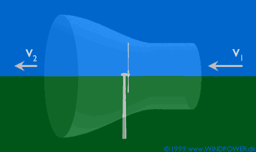

Wind
Turbines Deflect the Wind

The image on the previous page on the
energy in the wind is a bit simplified. In reality, a wind
turbine will deflect the wind, even before the wind reaches the
rotor plane. This means that we will never be able to capture
all of the energy in the wind using a wind turbine. We will discuss
this later, when we get to Betz' Law.
 In the image above we have the wind coming
from the right, and we use a device to capture part of the kinetic
energy in the wind. (In this case we use a three bladed rotor,
but it could be some other mechanical device).
In the image above we have the wind coming
from the right, and we use a device to capture part of the kinetic
energy in the wind. (In this case we use a three bladed rotor,
but it could be some other mechanical device).
The
Stream Tube
The wind turbine rotor must obviously slow down the wind as it
captures its kinetic energy and converts it into rotational energy.
This means that the wind will be moving more slowly to the left
of the rotor than to the right of the rotor.
 Since the amount of air entering through
the swept rotor area from the right (every second) must be the
same as the amount of air leaving the rotor area to the left,
the air will have to occupy a larger cross section (diameter)
behind the rotor plane.
Since the amount of air entering through
the swept rotor area from the right (every second) must be the
same as the amount of air leaving the rotor area to the left,
the air will have to occupy a larger cross section (diameter)
behind the rotor plane.
 In the image above we have illustrated this
by showing an imaginary tube, a so called stream tube
around the wind turbine rotor. The stream tube shows how the
slow moving wind to the left in the picture will occupy a large
volume behind the rotor.
In the image above we have illustrated this
by showing an imaginary tube, a so called stream tube
around the wind turbine rotor. The stream tube shows how the
slow moving wind to the left in the picture will occupy a large
volume behind the rotor.
 The wind will not be slowed down to its final
speed immediately behind the rotor plane. The slowdown will happen
gradually behind the rotor, until the speed becomes almost constant.
The wind will not be slowed down to its final
speed immediately behind the rotor plane. The slowdown will happen
gradually behind the rotor, until the speed becomes almost constant.
The
Air Pressure Distribution in Front of and Behind the Rotor
 The
graph to the left shows the air pressure plotted vertically,
while the horizontal axis indicates the distance from the rotor
plane. The wind is coming from the right, and the rotor is in
the middle of the graph.
The
graph to the left shows the air pressure plotted vertically,
while the horizontal axis indicates the distance from the rotor
plane. The wind is coming from the right, and the rotor is in
the middle of the graph.
 As the wind approaches the rotor from the
right, the air pressure increases gradually, since the rotor
acts as a barrier to the wind. Note, that the air pressure will
drop immediately behind the rotor plane (to the left). It then
gradually increases to the normal air pressure level in the area.
As the wind approaches the rotor from the
right, the air pressure increases gradually, since the rotor
acts as a barrier to the wind. Note, that the air pressure will
drop immediately behind the rotor plane (to the left). It then
gradually increases to the normal air pressure level in the area.
What
Happens Farther Downstream?
If we move farther downstream the turbulence
in the wind will cause the slow wind behind the rotor to mix
with the faster moving wind from the surrounding area. The wind shade behind the rotor will therefore
gradually diminish as we move away from the turbine. We will
discus this further on the page about the park
effect.
Why
not a Cylindrical Stream Tube?
Now, you may object that a turbine would be rotating, even if
we placed it within a normal, cylindrical tube, like the one
below. Why do we insist that the stream tube is bottle-shaped?
Of course you would be right that the turbine rotor could
turn if it were placed in a large glass tube like the one above,
but let us consider what happens:
 The wind to the left of the rotor moves with
a lower speed than the wind to the right of the rotor. But at
the same time we know that the volume of air entering the tube
from the right each second must be the same as the volume of
air leaving the tube to the left. We can therefore deduce that
if we have some obstacle to the wind (in this case our rotor)
within the tube, then some of the air coming from the right must
be deflected from entering the tube (due to the high air pressure
in the right ende of the tube).
The wind to the left of the rotor moves with
a lower speed than the wind to the right of the rotor. But at
the same time we know that the volume of air entering the tube
from the right each second must be the same as the volume of
air leaving the tube to the left. We can therefore deduce that
if we have some obstacle to the wind (in this case our rotor)
within the tube, then some of the air coming from the right must
be deflected from entering the tube (due to the high air pressure
in the right ende of the tube).
 So, the cylindrical tube is not an accurate
picture of what happens to the wind when it meets a wind turbine.
This picture at the top of the page is the correct picture.
So, the cylindrical tube is not an accurate
picture of what happens to the wind when it meets a wind turbine.
This picture at the top of the page is the correct picture.
© Copyright 1999 Danish Wind Turbine Manufacturers Association
Updated 6 August 2000
http://www.windpower.org/tour/wres/tube.htm